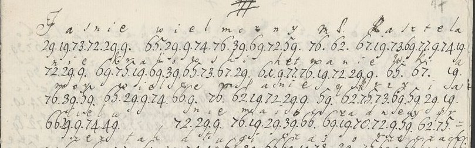

At a glanceExisting decipherment · complete
- The letters
- Constantin Brâncoveanu, Prince of Wallachia, and his uncle Constantin Cantacuzino to Adam Mikołaj Sieniawski, Grand Hetman of the Crown, June 1709 to September 1714, in Polish.
- Where
- Archiwum Narodowe w Krakowie, Zbiór Dzieduszyckich 26/32 nr 13 and nr 5 (DECODE R7468–R7474, R7477–R7480, R7483), status N/A, no decipherment attached.
- The cipher
- Two-digit numbers for letters (a = 19, e = 9, i = 29, n = 72 …), dot-separated or run together, with a few code numbers (900 = August).
- How it was deciphered
- M. W. Kaczka printed all twelve from these originals in 2012, with the key. Ten lines of R7473, decoded with his key here, agree with the decipherment written between the lines and with his text.
- Still open
- Nothing in these letters; they were not transcribed here beyond the check.
- Credit
- Kaczka’s edition and key (after A. Mareș 1987); the contemporary interlinear decipherments.
DECODE catalogues these records in one range (R7468–R7500, catalogue entry 333) with letters in four other keys, which have their own pages (a different cipher in each): fifteen German letters from a Vienna agent to Baron Schenck (schenck1706), news from Bender in 1709 (turculet1709), an adviser’s letter of about 1707 (r7475) and Chomentowski’s letters from the Porte (chomentowski1713).
01 The letters and the edition
Mariusz Kaczka printed the Polish letters of Constantin Brâncoveanu and Constantin Cantacuzino to Sieniawski from these originals in Danubius XXX (2012), with the Wallachian chancellery’s key in his note 21, after Andrei Mareș (1987). The DECODE records match his numbers as follows:
| DECODE | Kaczka | Letter |
|---|---|---|
| R7468–R7469 | V | Brâncoveanu, 28 June 1709, with postscript |
| R7470 | VIII | postscript of 30 August 1709 |
| R7471 | IV | Brâncoveanu, 15 June 1709 |
| R7472 | XXIII | Cantacuzino, 15 June 1709 |
| R7473 | XIII | Brâncoveanu, 25 August 1712 |
| R7474 | XXVI | Cantacuzino, 8 September 1714 |
| R7477 | XXV | Cantacuzino, 7 May 1714 |
| R7478 | XVII | Brâncoveanu, 10 August 1713 |
| R7479 | XIX | Brâncoveanu, 24 January 1714 |
| R7480 | XX | Brâncoveanu, 29 March 1714 |
| R7483 | XXI | postscript, 1714 (nr 5, now pp. 9–10) |
Kaczka names the collection Zbiór Dzieduszyckich; DECODE’s short names read “ADzied”.
02 The key, and the check

R7473 is written with a dot after each number and deciphered letter by letter between the lines: Jaśnie wielmożny M. P. Kasztelanie krakowski hetmanie w. k. … with J/i = 29, a = 19, s = 73, n = 72, e = 9, w = 65, l = 74, m = 76, o = 39, z = 69, y = 59, P = 62, k = 67, t = 77. The same numbers, run together without dots, fill R7468–R7472, with the clear words “WM Pana” between them. Ten lines of p. 17, decoded with Kaczka’s key, give the interlinear text and his printed text, with two slips of the encipherer (69 for 67 in krakowski, prszez).
The letters were not transcribed in full here: their text is Kaczka’s. What this entry adds is the identification of twelve DECODE records, listed with no decipherment, with his edition.
Full texts
The transcription and the decryption of every document on this page, so that the reading can be used and checked. Short files are shown here; all are in the repository.
Kaczka 2012 edition; R7473 p. 17 checked
Letters of Constantin Brâncoveanu, prince of Wallachia, and Constantin Cantacuzino to Hetman Adam Mikołaj Sieniawski, 1709-1714, in Polish in the Wallachian chancellery key, with contemporary interlinear decipherments.
Transcription
R7473 image P1 = ADzied 26/32 nr 13 p. 17 (first page of Brâncoveanu, Bucharest 25 VIII 1712, Kaczka no. XIII, pp. 17-24) Key A, dot-separated 2-digit groups; full interlinear decipherment above every line in a second (brown, small, spaced) hand. Transcribed from native-resolution crops (img/crop/sien_R7473_p1_a.jpg, _b.jpg, _z.jpg), first 10 cipher lines. Format per line: C = numbers as written; K = decoded with key A; G = interlinear gloss as written (approx.); KACZKA = printed text. L1 C: 29.19.73.72.29.9. 65.29.9.74.76.39.69.72.59. 76.62. 67.19.73.69.77.9.74.19. K: iasnie wielmozny mp kaszteła G: Jasnie wielmozny M.P. kasztela L2 C: 72.29.9. 69.75.19.69.39.65.73.67.29. 61.9.77.76.19.72.29.9. 65. 67. 19. K: nie zrazowski hetmanie w k a (69=z written twice for k=67: encipherer slip) G: nie krakowski hetmanie w. k. a L3 C: 76.39.59. 65.29.9.74.66.9. 76. 62.19.72.29.9. 59. 62.75.73.69.59.29.19. K: moy wielce m panie y prszyia G: moy wielce M. Panie y przyja L4 C: 66.29.9.74.49. 72.29.9. 76.19.29.39.66. 69.19.70.72.9.59. 62.75= K: cielu nie maioc zadney pr- G: cielu nie maioc zadney pr- L5 C: 73.69.9.69. 77.19.67. 70.74.49.64.29. 66.69.19.73. 39. 75.69.9.66.69.19.66.61. K: szez tak dlugi czas o rzeczach (73 before zez: encipherer wrote "prszez") G: zez tak dlugi czas o rzeczach L6 C: 29.19.67. 73.29.9. 65. 77.19.76.77.59.66.61. 65.29.39.70.39. 73.77.75.39.72.19.66[.61?] K: iak sie w tamtych wiodo stronac[h] G: iak sie w tamtych wiodo stronach L7 C: 65.29.19.70.39.76.39.73.66.29., 65.29.9.74.67.29.76. 69.77.39.70. 72.19. 73.9.75. K: wiadomosci, wielkim ztod na ser- G: wiadomosci wielkim ztod na ser- L8 C: 66.49. 76.9.75.39.75.9.76. 59. 75.39.69.72.9.76.29. 19.64.29.77.19.76.49.75. K: cu merorem y roznemi agitatur G: cu merorem y roznemi agitatur L9 C: 66.39.64.29.77.19.66.59.19.76.29.: 39.73.39.60.74.29.65.29.9. 69.9. 72.19.76. K: cogitacyiami: osobliwie ze nam G: cogitacyiami osobliwie ze nam L10 C: 77.19.67.29.9. 72.29.9.67.77.39.75.9. 69.77.19.76.77.39.70. 71.19.7[6?].19. 70.[39?].72.39. K: takie niektore ztamtod fa[m]a do[no]- G: takie niektore z tamtod fama dono- KACZKA (no. XIII, p. 17 onwards): "Jaśnie Wielmożny M Panie kasztelanie krakowski, hetmanie wielki koronny, a mój wielce M Panie i Przyjacielu / Nie mając żadnej przez tak długi czas o rzeczach jak się w tamtych wiodą stronach wiadomości wielkim stąd na sercu merorem i różnemi agitatur kogitacyjami, osobliwie, że mam takie niektóre stamtąd fama donosi..." AGREEMENT: the key-A decode of the first 10 lines matches Kaczka's printed text word for word (126 cipher letters / ~45 words), after his modernisation of spelling (ztod > stąd, wiodo > wiodą, cogitacyiami > kogitacyjami, moy > mój, y > i). Kaczka expands "w. k." to "wielki koronny". No divergence in sense. Key-A anomalies on the page (encipherer slips, not key changes): 69 (z) for 67 (k) twice in "krakowski" (L2); superfluous 73 (s) in "przez" (L4/5). L10: the digit read 70 in "fama" is probably 76 (6/0 alike); "dono" group reads 70.72.39 at this resolution, probably 70.39.72.39 with a smudged 39.
Decryption: xxx_05_KACZKA_format_a.pdf
Decryption
R7473 image P1 = ADzied 26/32 nr 13 p. 17 (first page of Brâncoveanu, Bucharest 25 VIII 1712, Kaczka no. XIII, pp. 17-24) Key A, dot-separated 2-digit groups; full interlinear decipherment above every line in a second (brown, small, spaced) hand. Transcribed from native-resolution crops (img/crop/sien_R7473_p1_a.jpg, _b.jpg, _z.jpg), first 10 cipher lines. Format per line: C = numbers as written; K = decoded with key A; G = interlinear gloss as written (approx.); KACZKA = printed text. L1 C: 29.19.73.72.29.9. 65.29.9.74.76.39.69.72.59. 76.62. 67.19.73.69.77.9.74.19. K: iasnie wielmozny mp kaszteła G: Jasnie wielmozny M.P. kasztela L2 C: 72.29.9. 69.75.19.69.39.65.73.67.29. 61.9.77.76.19.72.29.9. 65. 67. 19. K: nie zrazowski hetmanie w k a (69=z written twice for k=67: encipherer slip) G: nie krakowski hetmanie w. k. a L3 C: 76.39.59. 65.29.9.74.66.9. 76. 62.19.72.29.9. 59. 62.75.73.69.59.29.19. K: moy wielce m panie y prszyia G: moy wielce M. Panie y przyja L4 C: 66.29.9.74.49. 72.29.9. 76.19.29.39.66. 69.19.70.72.9.59. 62.75= K: cielu nie maioc zadney pr- G: cielu nie maioc zadney pr- L5 C: 73.69.9.69. 77.19.67. 70.74.49.64.29. 66.69.19.73. 39. 75.69.9.66.69.19.66.61. K: szez tak dlugi czas o rzeczach (73 before zez: encipherer wrote "prszez") G: zez tak dlugi czas o rzeczach L6 C: 29.19.67. 73.29.9. 65. 77.19.76.77.59.66.61. 65.29.39.70.39. 73.77.75.39.72.19.66[.61?] K: iak sie w tamtych wiodo stronac[h] G: iak sie w tamtych wiodo stronach L7 C: 65.29.19.70.39.76.39.73.66.29., 65.29.9.74.67.29.76. 69.77.39.70. 72.19. 73.9.75. K: wiadomosci, wielkim ztod na ser- G: wiadomosci wielkim ztod na ser- L8 C: 66.49. 76.9.75.39.75.9.76. 59. 75.39.69.72.9.76.29. 19.64.29.77.19.76.49.75. K: cu merorem y roznemi agitatur G: cu merorem y roznemi agitatur L9 C: 66.39.64.29.77.19.66.59.19.76.29.: 39.73.39.60.74.29.65.29.9. 69.9. 72.19.76. K: cogitacyiami: osobliwie ze nam G: cogitacyiami osobliwie ze nam L10 C: 77.19.67.29.9. 72.29.9.67.77.39.75.9. 69.77.19.76.77.39.70. 71.19.7[6?].19. 70.[39?].72.39. K: takie niektore ztamtod fa[m]a do[no]- G: takie niektore z tamtod fama dono- KACZKA (no. XIII, p. 17 onwards): "Jaśnie Wielmożny M Panie kasztelanie krakowski, hetmanie wielki koronny, a mój wielce M Panie i Przyjacielu / Nie mając żadnej przez tak długi czas o rzeczach jak się w tamtych wiodą stronach wiadomości wielkim stąd na sercu merorem i różnemi agitatur kogitacyjami, osobliwie, że mam takie niektóre stamtąd fama donosi..." AGREEMENT: the key-A decode of the first 10 lines matches Kaczka's printed text word for word (126 cipher letters / ~45 words), after his modernisation of spelling (ztod > stąd, wiodo > wiodą, cogitacyiami > kogitacyjami, moy > mój, y > i). Kaczka expands "w. k." to "wielki koronny". No divergence in sense. Key-A anomalies on the page (encipherer slips, not key changes): 69 (z) for 67 (k) twice in "krakowski" (L2); superfluous 73 (s) in "przez" (L4/5). L10: the digit read 70 in "fama" is probably 76 (6/0 alike); "dono" group reads 70.72.39 at this resolution, probably 70.39.72.39 with a smudged 39.
Reading
<!-- Reading of R7473 p. 17, the first ten cipher lines (Claude Opus 5.5, 23 Oct 2026), from sien/R7473_check.txt: the project's decode with the Wallachian key A, joined into words and sentences; where the encipherer slipped ("zrazowski", "prszyia-", "prszez") the contemporary interlinear decipherment written over every line is followed (krakowski, przyiacielu, przez); "M. P." and "w. k." as written; the bracketed letters of L6 and L10 as there. An excerpt: the rest of R7473 and the other letters of the entry are in M. W. Kaczka's edition (Danubius XXX, 2012), linked and not copied; the repository holds only these ten lines. -->
# R7473 p. 17, Constantin Brâncoveanu to Hetman Adam Mikołaj Sieniawski, Bucharest, 25 August 1712: reading of the first ten lines
## Reading
Iasnie wielmozny M. P. kasztelanie krakowski, hetmanie w. k., a moy wielce M. Panie y przyiacielu. Nie maioc zadney przez tak dlugi czas o rzeczach, iak sie w tamtych wiodo stronac[h], wiadomosci, wielkim ztod na sercu merorem y roznemi agitatur cogitacyiami, osobliwie ze nam takie niektore ztamtod fa[m]a dono- …Translation
<!-- English translation of sien/R7473_p17_reading.md (Claude Opus 5.5, 23 Oct 2026): the first ten cipher lines of R7473 p. 17 (Polish, with the Latin "merorem", "agitatur", "cogitacyiami"). An excerpt: the letter continues in Kaczka's edition, which is not in the repository. --> # R7473 p. 17, Constantin Brâncoveanu to Hetman Adam Mikołaj Sieniawski, Bucharest, 25 August 1712: English translation of the first ten lines Most Illustrious and Most Gracious Lord, Castellan of Cracow, Grand Hetman of the Crown, my much honoured Lord and Friend. Having had no news for so long a time about matters, how things go in those parts, I am stirred here with great sorrow at heart and with various thoughts, especially since such rumour brings us from there certain …
03 Sources
- Archiwum Narodowe w Krakowie, Zbiór Dzieduszyckich 26/32 nr 13 and nr 5: DECODE R7468–R7474, R7477–R7480, R7483.
- M. W. Kaczka, “Unpublished Letters of Constantin Brâncoveanu and Constantin Stolnicul Cantacuzino, from the Polish Archives”, Danubius XXX (Galați, 2012), pp. 101–140, PDF: the key in note 21.
- A. Mareș, “Din istoria criptografiei românești: cifrul cancelariei brîncovenești pentru corespondența în limba polonă”, Anuarul Institutului de Istorie și Arheologie “A. D. Xenopol” XXIV/1 (1987), pp. 335–341 (cited by Kaczka, not seen).
The page map of all the Sieniawski records and the R7473 check are in targets/sieniawski1708/.
Cite this page
Daniel Bourdeau, “Brâncoveanu and Cantacuzino to Hetman Sieniawski, 1709–1714”, Cyphersolver, posted 9 October 2026, updated 23 October 2026, https://cyphersolver.com/sieniawski1708.html.